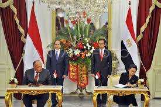
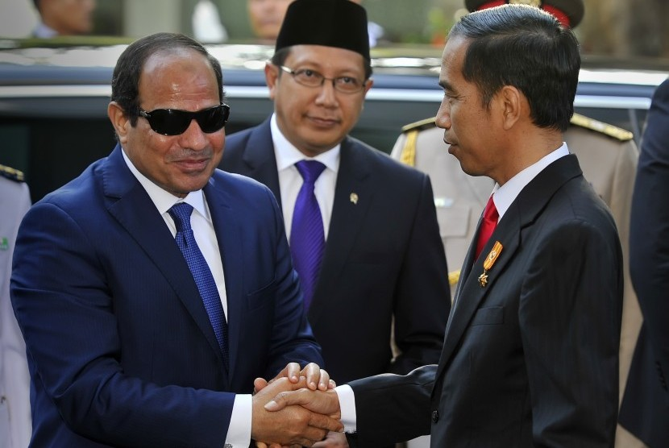

.png)
Kerjasama bilateral adalah hubungan kerja sama antara dua negara yang melibatkan berbagai aspek seperti ekonomi, politik, sosial, budaya, dan keamanan. Kerjasama ini biasanya didasarkan pada kesepakatan atau perjanjian yang ditandatangani oleh kedua negara untuk mencapai tujuan bersama yang saling menguntungkan Kerjasama antara Indonesia dan Mesir telah berlangsung cukup lama dan melibatkan berbagai bidang, seperti politik, ekonomi, pendidikan, budaya, dan agama. Hubungan bilateral antara kedua negara ini berlandaskan pada saling pengertian, kepercayaan, serta kepentingan bersama di tingkat regional dan internasional.
Perdagangan: Nilai perdagangan bilateral Indonesia-Mesir pada periode Januari-September 2024 mencapai sekitar 1,21 miliar dolar AS, meningkat sebesar 4,41% dari tahun sebelumnya. Ekspor Indonesia ke Mesir, termasuk minyak kelapa sawit, kopi, teh, dan barang-barang elektronik, juga meningkat signifikan. Data tersebut menunjukkan bahwa kerjasama Indonesia dengan Mesir menunjukkan hasil yang baik di bidang perdagangan.
Politik dan Diplomasi Indonesia dan Mesir memiliki hubungan diplomatik yang kuat dan aktif. Keduanya sering bertukar kunjungan pejabat tinggi untuk mempererat hubungan bilateral dan membahas isu-isu regional maupun global. Kerjasama politik mereka juga tercermin dalam berbagai forum internasional, seperti Organisasi Kerjasama Islam (OKI), Gerakan Non-Blok (GNB), dan Perserikatan Bangsa-Bangsa (PBB).
Pariwisata: Mesir dengan situs-situs bersejarahnya seperti Piramida Giza dan Luxor, merupakan tujuan wisata populer bagi orang Indonesia. sedangkan Indonesia dengan keindahan alam dan budaya yang kaya, juga menarik para wisatawan Mesir. Kedua negara berupaya untuk meningkatkan jumlah kunjungan wisatawan dengan mengadakan promosi pariwisata dan kerja sama dalam bidang pariwisata. Kerjasama Indonesia-Mesir semakin berkembang di berbagai sektor. Meskipun terdapat tantangan dalam beberapa bidang, kedua negara terus berusaha mempererat hubungan dan memajukan kepentingan bersama di tingkat bilateral maupun multilateral.
Pendidikan dan Kebudayaan Mesir menjadi salah satu tempat dalam dunia pendidikan Islam, melalui Universitas Al-Azhar yang sangat terkenal. Banyak pelajar Indonesia yang belajar di Mesir, baik di Al-Azhar maupun di lembaga pendidikan lainnya. Kerjasama pendidikan antara kedua negara melibatkan pertukaran mahasiswa, pengajaran bahasa, serta program beasiswa. Di bidang kebudayaan, Indonesia dan Mesir sering mengadakan kegiatan pertukaran budaya untuk meningkatkan pemahaman antarbudaya. Festival seni dan pameran budaya sering diadakan, yang membantu meningkatkan apresiasi terhadap seni dan tradisi masing-masing
 https://koran-jakarta.com/kbri-kairo-dorong-peningkatan-ekspor-dan-investasi-indonesia-di-mesir?form=MG0AV3
https://internasional.republika.co.id/berita/s1yelv502/dubes-ri-hubungan-indonesiamesir-semakin-erat?form=MG0AV3
https://www.kemendag.go.id/berita/pojok-media/indonesia-teken-mou-joint-trade-commitee-dengan-mesir-ini-keuntungannya?form=MG0AV3